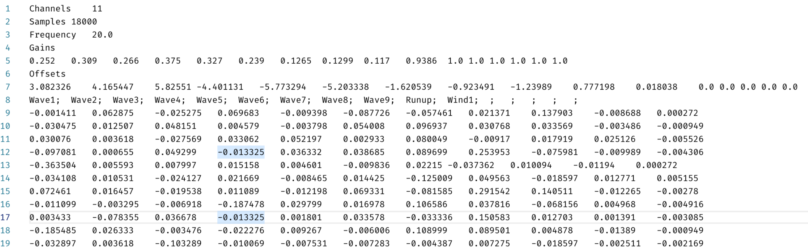

Data yang digunakan dalam aplikasi neural network di TA ini adalah data dari eksperimen yang di lakukan oleh US Army Corps of Engineer pada Agustus - September 2006. Analisa dilakukan oleh Demirbilek et al. dan di tulis dalam laporan yang berjudul ;SPMquot;Laboratory Study of Wind Effect on Runup over Fringing Reefs;SPMquot;. Data berasal dari hasil percobaan yang dilakukan di Ann Arbor oleh University of Michigan#TechnicalReports#724>

|